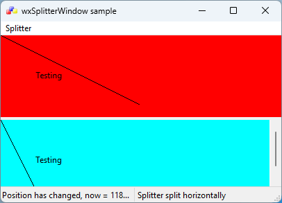

|
|
Version: 3.3.1 |
wxSplitterWindow Overview
Table of Contents
- See also
- wxSplitterWindow
Appearance
The following screenshot shows the appearance of a splitter window with a horizontal split.
The style wxSP_3D has been used to show a 3D border and 3D sash.

Example
The following fragment shows how to create a splitter window, creating two subwindows and hiding one of them.
leftWindow = new MyWindow(splitter);
leftWindow->SetScrollbars(20, 20, 50, 50);
rightWindow = new MyWindow(splitter);
rightWindow->SetScrollbars(20, 20, 50, 50);
rightWindow->Show(false);
splitter->Initialize(leftWindow);
// Set this to prevent unsplitting
// splitter->SetMinimumPaneSize(20);
The next fragment shows how the splitter window can be manipulated after creation.
void MyFrame::OnSplitVertical(wxCommandEvent& event)
{
if ( splitter->IsSplit() )
splitter->Unsplit();
leftWindow->Show(true);
rightWindow->Show(true);
splitter->SplitVertically( leftWindow, rightWindow );
}
void MyFrame::OnSplitHorizontal(wxCommandEvent& event)
{
if ( splitter->IsSplit() )
splitter->Unsplit();
leftWindow->Show(true);
rightWindow->Show(true);
splitter->SplitHorizontally( leftWindow, rightWindow );
}
void MyFrame::OnUnsplit(wxCommandEvent& event)
{
if ( splitter->IsSplit() )
splitter->Unsplit();
}
This event class contains information about command events, which originate from a variety of simple ...
Definition: event.h:2109